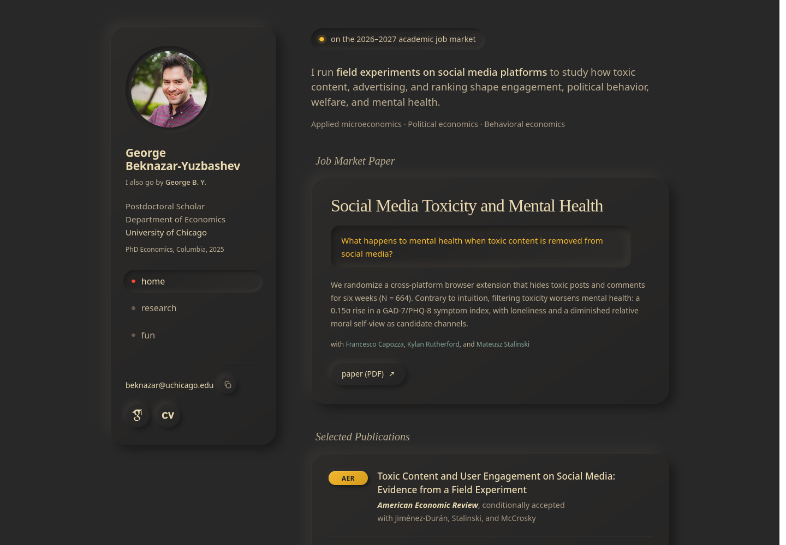
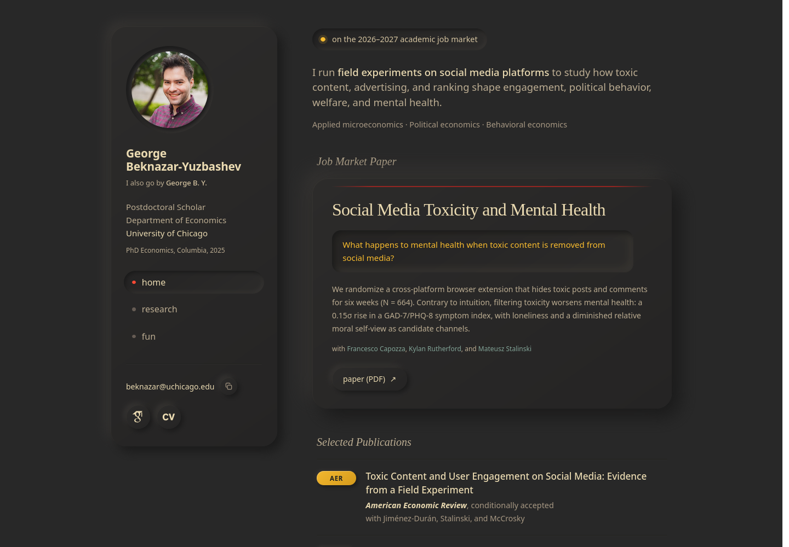
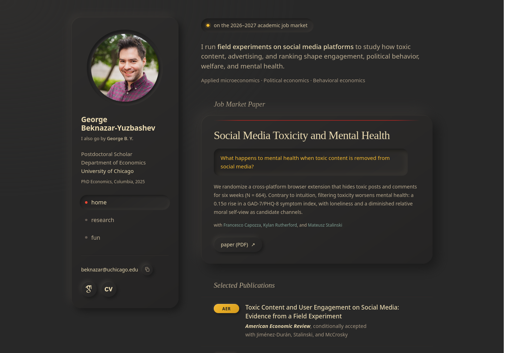
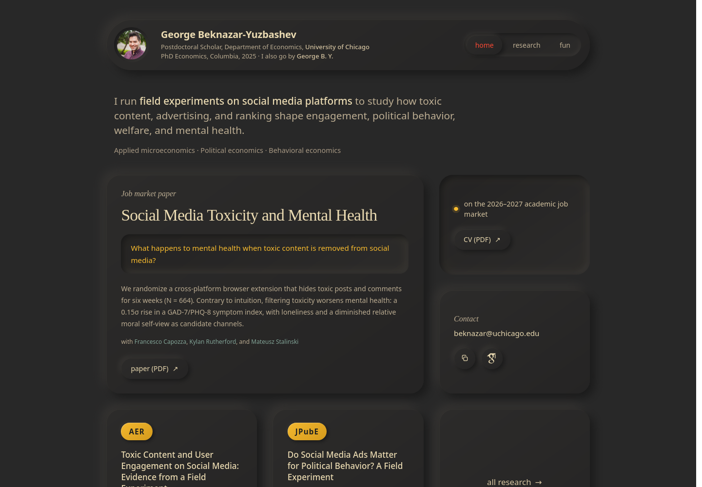
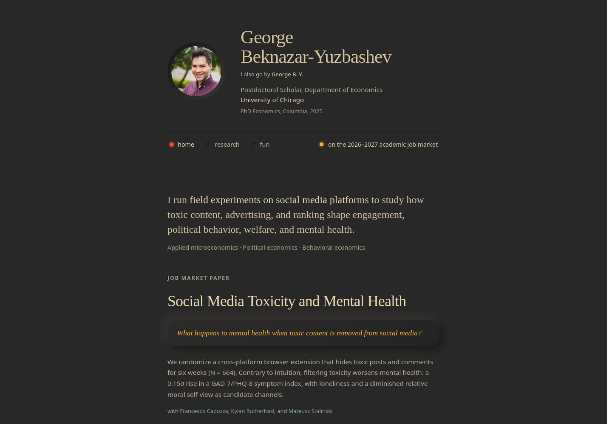
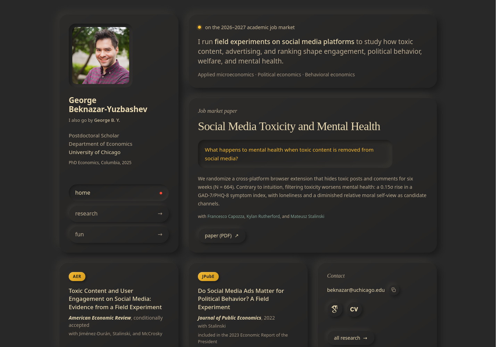

Four readings of the homepage in neumorphism, all in Gruvbox dark. Every surface is the page’s own grey, shaped by a lamp up and to the left: raised things catch it on their top-left edge, pressed things on their bottom-right. The journal placements stay bright and the job market question stays the focal point in each.

01Soft split
Recommended
Today’s layout, translated. The sidebar is a raised slab, the portrait sits in a pressed ring, the active nav item is pressed in, and the job market paper is a raised card with the question set in a well. Publications sit in a second slab, separated by grooves rather than borders.
Choose this for: the least disruptive route: the same hierarchy, the same reading order, with depth added to what is already there.

01bSoft split, revised
Revision of 01
Study 01 with three changes. The job market card is now the tallest object on the page and the publications lie flat between grooves, so the depth has a hierarchy. The card gets a muted red rule, in the dim Gruvbox red with fading ends, that brightens to the live site’s reflection on hover. “All research” is a quiet text link again. The compact sidebar is unchanged.
Choose this for: the same direction with a clearer focal point and the live site’s signature red back in place.

01cSoft split, ported
Revision of 01
Study 01b made real. Section labels and the publication rows take the card’s text inset, the highlight is a step brighter with a faint vignette toward the lamp, and the live behaviours are carried over: the copy-email key, the click-to-enlarge portrait that lifts under the pointer, the word brightening, and a print stylesheet that flattens every surface. The research page gets the same treatment, with abstracts opening into pressed wells.
Choose this for: the version to ship. Open the research page from its nav to see the rows and abstracts.

02Console
A pill-shaped nameplate holds the photo, name, and a segmented nav whose active key stands proud of its track. Below, a deck of tiles: the job market paper spans two columns, the AER and JPubE papers stack beside it with large raised venue badges, and contact and “all research” close the deck.
Choose this for: the most tactile reading of the style. Everything is a key or a tile, and the venues are at their largest.

03Letterpress
The quiet one. A single column, no cards. The name and section labels are pressed into the surface, sections are divided by grooves, and venue badges are pressed yellow type. The one raised element on the page is the job market question, so it is unmistakably the focal point.
Choose this for: an academic page that reads like a sheet of paper. The style is felt rather than seen.

04Bento
Everything becomes a tile. Identity, job-market status, nav, the job market paper, each publication, and contact each get their own raised surface, with the photo and the question pressed in. Tiles lift a little under the pointer and the grid reflows to two columns, then one, on smaller screens.
Choose this for: a modular, app-like page where every piece of information has its own place. The hierarchy is flatter, so it leans on size rather than order.